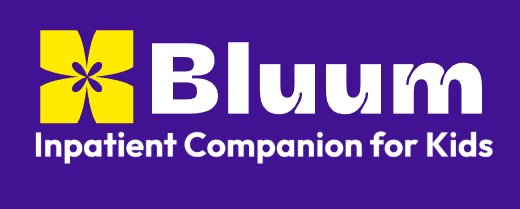
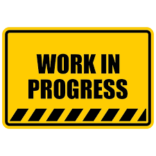

Throughout my time at IU Indianapolis, I have gained many different skills and been a part of many amazing experiences. However, I've recently found a niche that I've been developing (and enjoying) more than others: JavaScript Frameworks.
A JavaScript Framework is a software framework that provides a structure for developing web applications using JavaScript. It helps developers build applications faster and easier by offering pre-built components and utilities. While there are many frameworks out there, I have mainly been focusing on mastering Svelte and React.js, which have become my go-to choices for building modern web applications.
As a part of my journey to master these frameworks, I have built several projects that utilize them in different ways:
Bluum — A program developed in React-Native.

MarkUp — A text editor web platform created using React, Marked.js, and Draft.js
EventSea — An alternative to IU Indy's The Spot utilizing Svelte.

⚠️ EventSea is in progress and does not have finalized branding yet.
All of these projects utilize different frameworks and include different features, but together they demonstrate my growing expertise in JavaScript development using frameworks. Overall, they paint a picture of my development journey over the past three semesters.